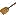

The Proving Perspective (Rodin User Manual)
From Event-B
|
Overview
When proof obligations (POs) are not discharged automatically the user can attempt to discharge them interactively using the Proving Perspective. This page provides an overview of the Proving Perspective and its use. If the Proving Perspective is not visible as a tab on the top right-hand corner of the main interface, the user can switch to it via "Window -> Open Perspective".
The Proving Perspective consists of a number of views: the Proof Tree, the Goal, the Selected Hypotheses, the Proof Control, the Search Hypotheses, the Cache Hypotheses and the Proof Information. In the discussion that follows we look at each of these views individually. Below is a screenshot of the Proving Perspective:
{kind=link}
Loading a Proof
To work on an un-discharged PO it is necessary to load the proof into the Proving Perspective. To do this switch to the Proving Perspective; select the project from the Event-B Explorer; select and expand the component (context or machine); and finally select (double-click) the proof obligation of interest. A number of views will be updated with details of the corresponding proof.
{kind=link}
Note that pressing button on the top left hand side of the Event-B Explorer will remove all discharged proof obligations (PO's) from the view.
{kind=link}
The Proof Tree
The proof tree view provides a graphical representation of each individual proof step, as seen in the following screenshot:
{kind=link}
Each node in the tree corresponds to a sequent. A line is right shifted when the corresponding node is a direct descendant of the node of the previous line. Each node is labelled with a comment which indicates which rule has been applied, or which prover discharged the proof. By selecting a node in the proof tree, the corresponding sequent is loaded: the hypotheses of the sequent are loaded to the Selected Hypotheses window, and the goal of the sequent is loaded to the Goal view.
Decoration
The leaves of the tree are decorated with one of three icons:
- means that this leaf is discharged,
- means that this leaf is not discharged,
- means that this leaf has been reviewed.
{kind=link}
{kind=link}
Internal nodes in the proof tree are decorated in reverse colours. Note that a "reviewed" leaf is one that is not discharged yet by the prover. Instead, it has been "seen" by the user who decided to postpone the proof. Marking nodes as "reviewed" is very convenient since the provers will ignore these leaves and focus on specific areas of interest. This allows interactive proof in a gradual fashion. In order to discharge a "reviewed" node, select it and prune the tree at that node: the node will become "brown" again (undischarged) and you can now try to discharge it.
Navigation within the Proof Tree
On top of the proof tree view, one can see three buttons:
- the "G" buttons allows you to see the goal of the sequent corresponding to each node,
- the "+" button allows you to fully expand the proof tree,
- the "-" allows you to fully collapse the tree: only the root stays visible.
Manipulating the Proof Tree
Hiding
The little square (with a "+" or "-" inside) next to each node in the proof tree allows you to expand or collapse the subtree starting at that node.
Pruning
The proof tree can be pruned at a selected node; the subtree of the selected node is removed from the proof tree. The selected node becomes a leaf and is decorated with . The proof activity can then be resumed from this node. After selecting a node in the proof tree pruning can be performed in two ways:
- by right-clicking and then selecting "Prune",
- by clicking on the
 button in the proof control view.
button in the proof control view.
Note that after pruning, the post-tactic is not applied to the new current sequent. The post-tactic should be applied manually, if required, by clicking on the post-tactic button in the Proof Control view. This is useful, in particular, when you want to redo a proof from the beginning. The proof tree can be pruned at its root node and then the proof can proceed again, with invocation of internal or external provers; or with interactive proof.
Before pruning a particular node, the node (and its subtree) can be copied to the clipboard. If the new proof strategy subsequently fails, the copied version can be pasted back into the pruned node (see the next section).
Copy/Paste
By selecting a node in the proof tree and then right-clicking with the mouse, you can copy the part of the proof tree starting at that sequent (the node and its subtree). Pasting the node and subtree back in is done in a similar manner, with a right mouse click on a proof node. This allows reuse of part of a proof tree in the same, or even in another, proof.
Goal and Selected Hypotheses
The nodes in the proof tree view correspond to sequents. A user will work with one selected node, and thus one sequent, at a time; attempting various strategies in an effort to show that the sequent goal is true. The "Goal" and "Selected Hypotheses" views provide information to the user about the currently selected sequent. Here is an example:
{kind=link}
A hypothesis can be removed from the list of selected hypotheses by selecting the check the box situated next to it (you can click on several boxes) and then by clicking on the  button at the top of the selected hypotheses window:
button at the top of the selected hypotheses window:
{kind=link}
Here is the result:
{kind=link}
Note that the deselected hypotheses are not lost: you can find them again using the Search Hypotheses button in the Proof Control view. Other buttons are used as follows:
{kind=link}
{kind=link}
-
 invert the selection.
invert the selection.
- next to the goal - proof by contradiction 1: The negation of the goal becomes a selected hypothesis and the goal becomes "⊥".
{kind=link}
- next to a selected hypothesis - proof by contradiction 2: The negation of the hypothesis becomes the goal and the negated goal becomes a selected hypothesis.
Applying Proof Rules
A user wishing to attempt an interactive proof has a number of proof rules available, and these may be either rewrite rules or inference rules. In the Goal and the Selected Hypotheses views various operators may appear in red coloured font. The red font indicates that some interactive proof rule(s) are applicable and may be applied as a step in the proof attempt. When the mouse hovers over such an operator a number of applicable rules may be displayed; the user may choose to apply one of the rules by clicking on it.
Other proof rules can be applied when green buttons appear in the Goal and Selected Hypotheses views. Examples are proof by contradiction , that we have already encountered; and for conjunction introduction in the goal.
{kind=link}
{kind=link}
To instantiate a quantifier the user enters the desired expression in the box behind the quantifier and clicks on the quantifier:
{kind=link}
Rewrite Rules
Rewrite rules are one-directional equalities (and equivalences) that can be used to simplify formulas (the goal or a single hypothesis). A rewrite rule is applied from left to right when its side condition holds; it can be applied either in the goal predicate, or in one of the selected hypotheses.
A rewrite rule is applied either automatically (A) or manually (M):
- automatically, when post-tactics are run.
- automatically, when auto-tactics are run.
- manually, through an interactive command. These rules gather non equivalence laws, definition laws, distributivity laws and derived laws.
Automatic rewrite rules are equivalence simplification laws.
Each rule name indicates the rule's characteristics according to the following convention:
- the law category: simplification law (SIMP), definition law (DEF), distributivity law (DISTRI), or else derived law (DERIV).
- the root operator of the formula on the left-hand side of the rule, e.g. predicate AND, expression BUNION.
- (optionally) the terminal elements on the left-hand side of the rule: special element (SPECIAL) such as the empty-set, type expression (TYPE), same element occurring more than once (MULTI), literal (LIT). A type expression is either a basic type (
 , any carrier set), or
, any carrier set), or  (type expression), or type expression
(type expression), or type expression type expression.
type expression.
- (optionally) some other description of a characteristic, e.g. left (L), right (R).
Rewrite rules having a symmetric operator on the left-hand side may also describe other rules. eg: the rule:

should also produce the rule:

For associative operators in connection with distributive laws as in:

it has been decided to highlight the first associative/commutative operator (the ). A menu is presented when hovering the mouse over the operator: the first menu option distributes all associative/commutative operators, the second option distributes only the first associative/commutative operator. In order to simplify the explanation we write associative/commutative operators with two parameters only. However, we must emphasise here, that generally we may have a sequence of more than two parameters. So, we write  instead of
instead of  . Rules are sorted according to their purpose.
. Rules are sorted according to their purpose.
Rules marked with a star in the first column are implemented in the current prover. Rules without a star are planned for implementation.
Rewrite rules are split into:
They are also available in a single large page All Rewrite Rules.
Inference Rules
Inference rules (see Proof Rules) are applied either automatically (A) or manually (M).
Inference rules applied automatically are applied at the end of each proof step. They have the following possible effects:
- they discharge the goal,
- they simplify the goal and add a selected hypothesis,
- they simplify the goal by decomposing it into several simpler goals,
- they simplify a selected hypothesis,
- they simplify a selected hypothesis by decomposing it into several simpler selected hypotheses.
Inference rules applied manually are used to perform an interactive proof. They can be invoked by clicking on the red highlighted operators in the goal or the hypotheses. A menu is presented when there are several options.
See Inference Rules list.
The Proof Control View
The Proof Control view contains the buttons which you can use to perform an interactive proof.
{kind=link}
The Proof Control view offers a number of buttons whose effects we briefly describe next; moving from left to right on the toolbar:
- (nPP) invokes the new predicate prover, a drop-down list indicates alternative strategies.
- (R) indicates that a node has been reviewed: in an attempt by the user to carry out proofs in a stepwise fashion, they might decide to postpone the task of discharging some proofs until a later stage. To do this the proofs can be marked as reviewed by choosing the proof node and clicking on this button. This indicates that by visually checking the proof the user is convinced that they can discharge it later, but they do not want to do it right now.
- (p0) the PP and ML provers can be invoked from the drop-down list using different forces.
- (dc) do proof by cases: the proof is split into two branches. In the first branch:- the predicate supplied by the user is added to the Selected Hypotheses, and the user attempts to discharge this branch. In the second branch :- the predicate supplied by the user is negated and added to the Selected Hypotheses; the user then attempts to discharge this branch.
- (ah) add a new lemma: the predicate in the editing area should be proved by the user. It is then added as a new selected hypothesis.
- (ae) abstract expression: the expression in the editing area is given a fresh name.
- the robot: invokes the auto-prover which attempts to discharge the goal. The auto-prover is applied automatically on all proof obligations after a "save" without any intervention of the user. Using this button, you can invoke the auto-prover within an interactive proof.
- the post-tactic is executed ,
- lasoo: load into the Selected Hypotheses window those hidden hypotheses that contain identifiers in common with the goal, and with the selected hypotheses.
- backtrack form the current node (i.e., prune its parent),
- scissors: prune the proof tree from the node selected in the proof tree,
- Search Hypotheses: find hypotheses containing the character string in the editing area, and display in the Search Hypothesis view.
- Cache Hypotheses: press this to display the "Cache Hypotheses" view. This view displays all hypotheses that are related to the current goal.
- load the previous undischarged proof obligation,
- load the next undischarged proof obligation,
- (i) show information corresponding to the current proof obligation in the corresponding window. This information correspond to the elements that directly took part in the proof obligation generation (events, invariant, etc.),
- goto the next pending node of the current proof tree,
- load the next reviewed node of the current proof tree.
- Disable/Enable Post-tactics: allows the user to choose whether post-tactics run after each interactive proof step.
The Smiley
The smiley can be one of three different colors: (1) red, indicates that the proof tree contains one or more undischarged sequents, (2) blue, indicates that all undischarged sequents of the proof tree have been reviewed, (3) green, indicates that all sequents of the proof tree are discharged.
The Editing Area
The editing area allows the user to supply parameters for proof commands. For example, when the user attempts to add a new hypothesis (by clicking on the lemma ah button), the new hypothesis should have been written by the user in the editing area.
ML/PP and Hypotheses
ML
ML (mono-lemma) prover appears in the drop-down list under the button (pp) as M0, M1, M2, M3, ML. The different configuration (e.g., M0) refer to the proof force of the ML prover. All hypotheses are passed to ML.
PP
PP (predicate prover) appears in the drop-down list under the button (pp) as P0, P1, PP.
- P0 uses all selected hypotheses (the ones in Selected Hypotheses window).
- P1 employs a lasoo operation to the selected hypotheses and the goal, and uses the resulting hypotheses.
- PP uses all hypotheses.
The Search Hypotheses View
By typing a string in the Proof Control window and pressing the Search Hypotheses button a window is provided which contains the hypotheses having a character string in common with the one entered by the user in the editing area. For example, if we search for hypotheses involving the character string "cr", then after pressing the Search Hypothesis button on the proof control window, we obtain the following:

This view also integrates a "quick search" area (A), that allows us to search quickly hypotheses involving short character strings such as "cr". A search hypothesis button (B) that behaves the same as the button of the proving window, a refresh button (C) that updates the window manually for more control, and a drop down menu (D) to set the preferences of the view up.
By pressing return key or the button (B) (once a short string has been given in the input area (A)), hypotheses can be searched quickly as if we used the Proof Control as described before.
The drop down menu (D) is accessible to set some preferences over the searched hypotheses :

If we change preferences for the search, we might need to "update" manually the view with the button (C). By selecting "Consider hidden hypotheses in search" option, we can review all hypotheses that have been unselected in the selected hypotheses window(more info about selected/hidden hypotheses...).
{kind=link}
To move any of these hypotheses to the Selected Hypotheses window, select those required (using the check boxes) and press the  button. Adding these hypotheses to the selected hypotheses means that they will be visible to the prover. They can then be used during the next interactive proof phase.
button. Adding these hypotheses to the selected hypotheses means that they will be visible to the prover. They can then be used during the next interactive proof phase.
To remove hypotheses from the Search Hypotheses window use the  button. This button also appears above the selected hypotheses, and allows the user to remove any hypothesis from the Selected Hypotheses window.
button. This button also appears above the selected hypotheses, and allows the user to remove any hypothesis from the Selected Hypotheses window.
The other button, situated to the left each hypotheses, is the button. clicking on this will attempt a proof by contradiction. The effect is the same as if the hypothesis were in the Selected Hypotheses.
The Cache Hypotheses Window
This window allows the user to keep track of recently manipulated (e.g., used, removed, selected) hypotheses for any PO. For example, when the user applies a rewrite to an hypothesis, a new hypothesis (after the rewriting) is selected, and the original hypothesis is deselected and put in the Cache Hypotheses window.
Similar operations (to that of the Selected Hypotheses and Search Hypotheses windows) such as removing, selecting and proof by contradiction (ct) are also available for the cached hypotheses. Interactive proof steps (e.g., rewriting) can also be carried out from the Cache Hypotheses window as well as the Search Hypotheses window.
Proof Information View
This view displays information so that the user can relate a proof obligation to the model. For example, typical information for an event invariant preservation PO includes the event; as well as the invariant in question. In the following example, the hyperlinks 'CreateToken' and 'inv2' can be used to navigate to the containing machine.
{kind=link}
Rule Details View
This view displays the information relative to a given proof tree node, on which a rule was applied.
A command is available when right-clicking on a proof tree node, in order to reveal the Rule Details View (See picture below).

By default, this view is a fast view. A button (identified by the view's icon) is then available at the bottom left of the workbench, to show up this view.
Here is an overview of the Rule details view :
{kind=link}
A quick view on the applied rule contents is provided. On the picture above, we display the contents of the rule named "∀ hyp mp" where an input has been used to instantiate an hypothesis.
One can see quickly which was the input used by the instanciation (following instantiated with), and which was the hypothesis considered by this rule (this is given by the hypothesis of Input Sequent).
Furthermore, it is possible to view the antecedents created by this rule in details (i.e. child proof tree nodes) and the actions performed on hypotheses : selection, deselection, etc.
Auto-tactic and Post-tactic
The auto-tactic applies a combination (i.e. ordered list) of rewrite, inference tactics and external provers automatically to newly generated proof obligations. However, they can also be invoked by the user by clicking on the button in the Proof Control view. Note that the automatic application of the auto-prover can be quickly toggled with the Prove automatically menu item available from the Project menu. See the picture below.
{kind=link}
{kind=link}
The post-tactic is also a combination of rewrite, inference tactics and external provers, and is applied automatically after each interactive proof step. However, it can also be invoked manually by clicking on the  button in the Proof Control view.
{kind=link}
Note that the post-tactic can be disabled quickly by clicking on the little arrow (marked with an A on the figure below) of the Proof Control view (right upper corner) and then on "Disable post-tactic" (B):
{kind=link}
Principles
The ordered list of rewrite, inference tactics and external provers that should be applied is called a profile. There are two default profiles, one for the auto-tactic and one for the post-tactic. These default profiles are immutable in time, but can be duplicated for further modification by the user. Indeed, the user can edit a profile and select it to run as automatic or post tactic. The idea is to have a set of available tactic profiles to be used as needed. Moreover, these edited profiles are shipped with projects if defined at this scope, or can be imported or exported if defined at a workspace level, which is very useful to share them.
There are two ways to run the automatic or post tactics:
- the manual way consists into clicking on the button, or the button in the Proof Control view, to respectively launch the auto-tactic (with the selected auto-tactic profile) and the post-tactic (with the selected post-tactic profile).
- the automatical way if such preference is activated. (Auto-tactic after each proof step, and post-tactic at each step and rebuild) The mandatory condition for post-tactics or auto-tactics to automatically run is that they should be activated from their preference or property.
The user can separately define tactic profiles and assign them to post and auto tactics. Therefore, there are two tabs in the "Auto/Post Tactic" preference page to address these choices. These tabs will be descibed in the two next sections.
Preferences for the selected auto and post tactic profile
This section describes the "Auto/Post Tactic" tab of the "Auto/Post Tactic" preference page.
There are two scopes to set up preferences for the auto and post tactics : at workspace level, and at project level. Note that if the automatic application of tactics (auto or post) is decided only at workspace level, and this choice is held at project level.
To access these preferences, one as to go open the "Auto/Post Tactic" preference page that can be found after "Window > Preference > Sequent Prover".
The figure below shows the "Auto/Post Tactic" preference page:
{kind=link}
The buttons 1 and 2 are activating/deactivating the automatic use of respectively auto and post tactics.
One can also see on this picture the selected profile to be use as auto and post tactic.
Note that there is always a profile selected, and this profile can be changed whether the tactic are automatically launched or not, as there is alway a way to manually launch auto and post tactics.
On the preference appearing above, the Default Auto Tactic Profile is used to compose the automatic tactic, and the Default Post Tactic Profile is used to compose the post-tactic.
The figure below shows the "Auto/Post Tactic" Preference page with both auto-tactic and post-tactic to automatically run, and where the user selects the profile "MyFirstTacticProfile" to be used as auto-tactic profile.
{kind=link}
Preferences for available profiles
This section describes the "Profile" tab of the "Auto/Post Tactic" preference page.
{kind=link}
The figure above shows the contents of the profile tab. There are two visible lists : a list of profiles on the left the tactics or provers that compose these profiles (Profile Details). Here one can see the contents of the Defaut Auto Tactic Profile.
There are 4 buttons available to the user :
- New : to create a new profile "from scratch",
- Edit : to edit an existing (editable) profile,
- Remove : to remove a profile definitively,
- Duplicate : to duplicate a selected profile for further slight modification,
Default profiles can not be edited nor removed. That is why they are greyed on the image above.
On the picture below appears the dialog available to edit or create a profile. Here we create a profile named 'MyFirstTacticProfile'.
{kind=link}
The list of the right represents the available and unselected tactics. The list of the left is the profile contents, and represents the selected tactics to be applied from the top to down. The user can select some available tactic from the list of the right using the ">>" button or unselect some tactics from the list of the left using the "<<" button. The user can re-order contiguous selection of selected tactics using the "Up" and "Down" button. By clicking on "Finish" the profile will be saved and available for use in the auto and post tactics.
Project specific settings
The user can select profiles locally to project. To do so, one has to select the "Auto/Post Tactic" property page available from right-click > Properties on a project, or by clicking the Configure project specific settings link on the "Auto/Post Tactic" preference page. This property page appears on the picture below, opened on the Auto/Post tactic tab.
{kind=link}
Note that the enablement of automatic use of post and auto tactics is decided at a workspace level.
The picture below shows the Profiles tab of the Auto/Post Tactic page for a project specific setting:
At the project level, there is a contextual menu available on right click from the list of defined profiles.
{kind=link}
This contextual menu offers two options to the user :
- Import Workspace Profiles to retrieve all the defined profiles in the workspace,
- Export to Workspace Profiles to push a selected profile up in the list of workspace profiles.